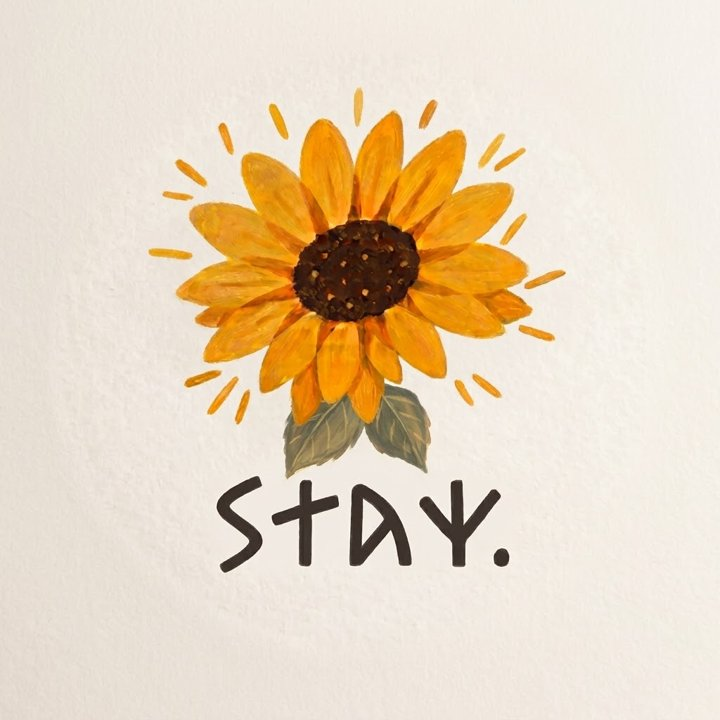
香港精神科註冊護士｜Psynurse.project01Stay.
陪伴著你。
從小到大，身邊的人都說我說話有一種溫暖。這份溫暖帶我走進了精神科，也讓我想陪更多人，一起面對生命中的困難。
未經他人苦，莫勸他人善。
在前線工作越久，我越相信：每一個看似「想不開」的人背後，都有我們未曾經歷的故事。先理解，只是打開第一道門。
「Stay.」的故事
Stay with you.
我想告訴每一位正在掙扎的人：不需要急著離開，我會留下來，陪你一起面對所有困難。
太陽花是我最喜歡的花，它總是向著陽光，代表積極與希望。
這個標誌，是一位有精神病經歷的網友親手為我設計的。對我來說，它不只是一個 logo，而是一份信任——也提醒我，為甚麼要繼續做這件事。
Psy Nurse Project
一個護士，一連串讓精神科走近你的計劃。每一個 Project，都是向前走的一步。
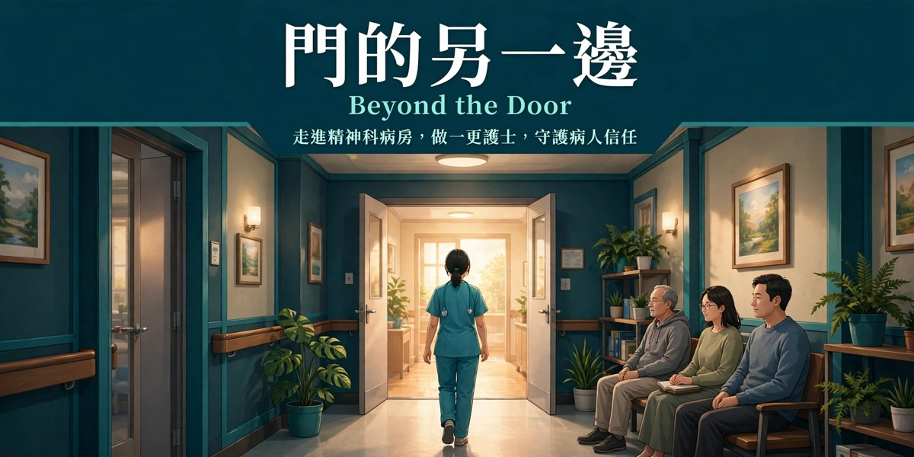
門的另一邊.
Beyond the Door
精神科病房的門後，是怎樣的世界？
- ☀️ 日間模式親身體驗 A 更及 P 更的工作流程。
- 🌙 夜間模式與病人對話，聽聽他們心底的故事。
免費・瀏覽器直接玩，無需下載
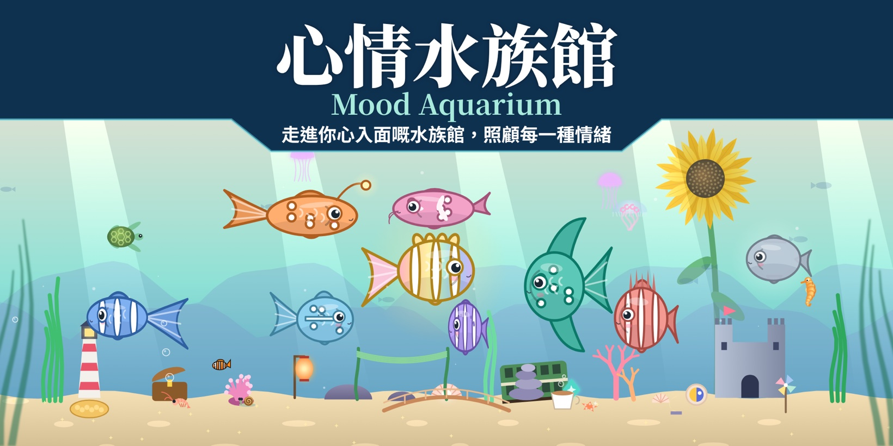
心情水族館.
Mood Aquarium
走進你心裡的水族館，照顧每一種情緒。
- 🐠 認識情緒水族館裡的每一位小伙伴，都代表著你的一種心情。
- 🫧 照顧自己陪伴、照料、佈置，慢慢把心裡的水族館打理得更舒服。
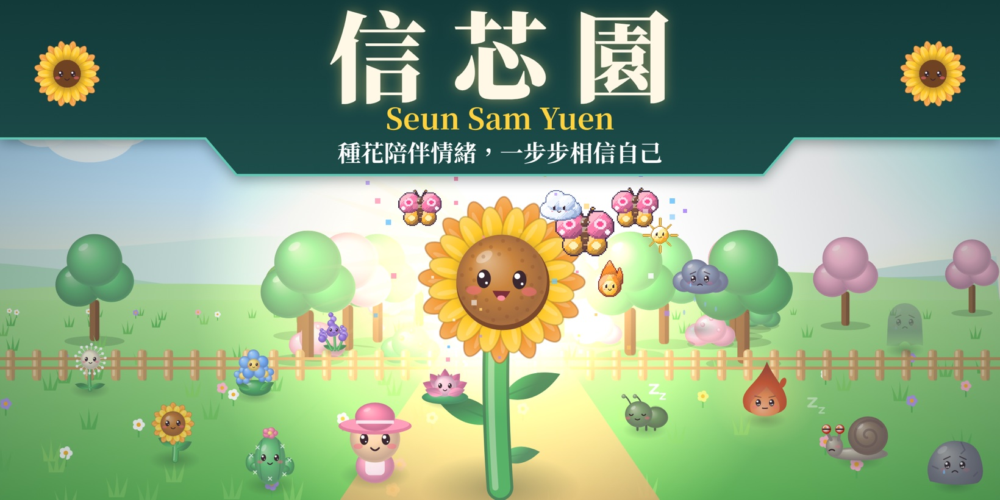
信芯園.
Seun Sam Yuen
種花陪伴情緒，一步步相信自己。
- 🌱 種花陪伴為不同的情緒種下一朵花，讓它們都有自己的位置。
- 🌻 相信自己每天一小步，看著花園和自己一起慢慢長大。
敬請期待
下一個計劃正在醞釀中，追蹤我的社交平台，第一時間知道最新消息。
← 左右滑動睇更多作品 →
關於我
🌻 網友都叫我太陽花護士
我是一名香港精神科註冊護士，擁有快將五年精神科前線經驗。像太陽花一樣，我希望自己總是向著光，也把一點溫暖帶給身邊的人。
🌻 我很相信「太陽花理論」（The Sunflower Theory）：心情低落時，走到有光的地方，把臉轉向天空，慢慢呼吸一分鐘。太陽花總是向著光，我也希望陪你一起，在低落的日子裡找回一點光。想試試看？可以到放鬆練習角落。
小時候，朋友有心事總喜歡找我傾訴，他們說聽我說話會覺得被安慰。長大後我才明白，能夠安慰人並不是理所當然的事——它需要聆聽、理解，也需要知識。於是我選擇了精神科，希望把這份天性，變成真正能幫到人的專業。
從兒童及青少年，到成人急症，我陪伴過不同年紀、不同處境的人走過他們人生中最艱難的時刻。
對我來說，精神科不只是一份工作，而是一堂教我如何做人的課。
工作經驗
成人急症科 包括濫藥
為急性期的思覺失調、情緒病、焦慮症及物質濫用等患者提供評估及護理，並處理自殺及自傷風險等危機情況，於高壓環境下保持冷靜、專業與同理心。
兒童及青少年精神科 包括智障科及學習障礙
照顧受情緒及精神健康問題困擾的兒童及青少年，包括有智力障礙、學習障礙及情緒行為需要的孩子，並與家長同行，協助他們理解及支援孩子。
曾任私家看護
曾上門為病人提供個人化護理，並支援家屬的照顧需要。
專業資格
- 香港精神科註冊護士Registered Psychiatric Nurse, Hong Kong於香港護士管理局註冊，專門照顧有精神健康需要的人士，提供評估、護理及危機處理。
- 兒童遊戲治療師（中級）透過遊戲幫助孩子表達說不出口的情緒，處理內心的困擾。
- 精神健康急救證書懂得辨識精神健康危機的早期徵兆，並在專業協助到達前提供初步支援。
- 保健員已註冊保健員，可在院舍為長者提供基本健康護理。
- 殘疾人士院舍保健員可在殘疾人士院舍為住客提供健康護理及日常照顧。
我想做的事
讓精神科變得貼地
精神健康與每一個人息息相關。我希望用簡單易明的方式，讓大家關注、了解精神科。
一起互相學習
學習從來不只是單向的。同行、學生、照顧者、對精神科有興趣的你，甚至每一位病人，都在教我如何做人。歡迎一起交流，互相學習、一同成長。
打破對精神科的負面印象
精神病不是「黐線」，精神科也不可怕。我希望透過分享，慢慢改變社會的既有標籤。
讓求助不再困難
很多人不是不想求助，而是不知道從哪裡開始。我希望整理實用的資訊和資源，讓你需要時，知道門在哪裡。
給正在看這裡的你
不論你是因為好奇、想了解精神科，還是正經歷一段不容易的日子而來到這裡——謝謝你願意停下來看看。
如果你最近有點累，請記得：你的感受是真實的，也值得被好好對待。你不需要一個人撐著，慢慢來就好。
願你在這裡，找到一點點溫暖。
Stay. 🌻
—— 太陽花護士
放鬆練習角落
六個簡單的練習加一個太陽花小練習，陪你在心情緊繃時，慢慢回到當下。
進入練習 →資訊站
我在社交平台整理過的實用資訊，陸續更新中。
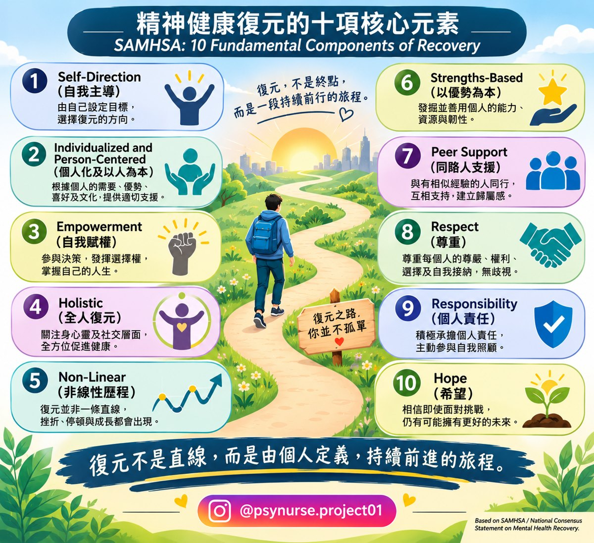
復元知識🌱 精神健康復元的十項核心元素
參考 SAMHSA 的 10 項復元核心元素：自我主導、以人為本、希望等。復元不是直線，而是由個人定義、持續前進的旅程。
查看完整圖表 →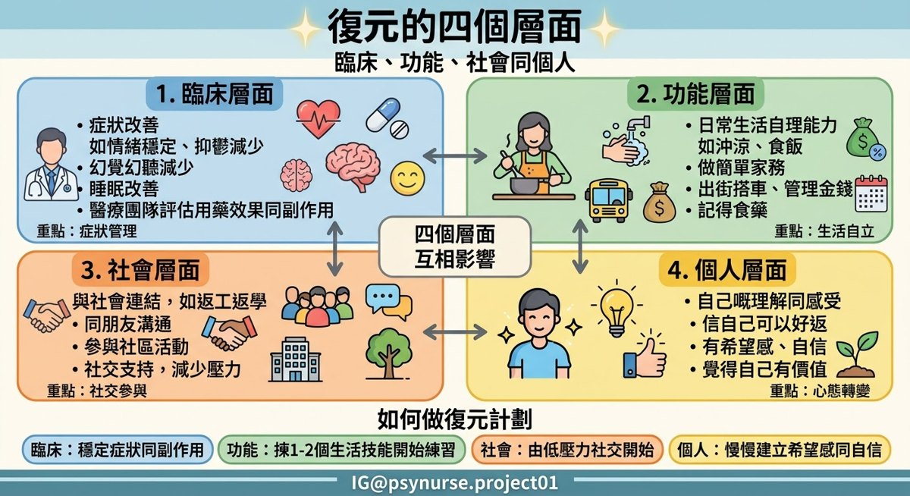
復元知識🧩 復元的四個層面
臨床、功能、社會和個人四個層面互相影響，附如何做復元計劃的小貼士。
查看完整圖表 →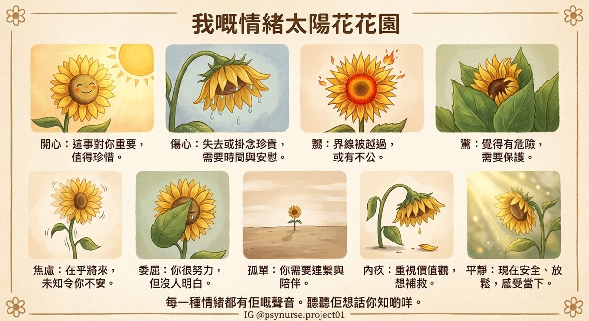
情緒認識🌻 我嘅情緒太陽花花園
開心、傷心、嬲、驚、焦慮、委屈、孤單、內疚、平靜，每一朵太陽花代表一種情緒想告訴你的事。每一種情緒都有它的聲音。
查看完整圖表 → 回顧🌻 30 日挑戰回顧
我曾經做過的 30 日小挑戰，每天一個照顧自己的小任務，歡迎隨時重溫。
到 IG 看系列 →收到的說話
朋友和網友傳來的訊息，是我繼續走下去的力量。
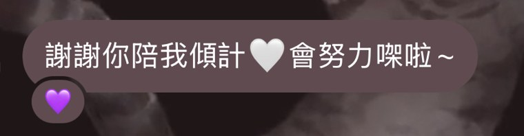
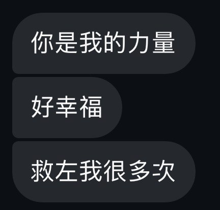
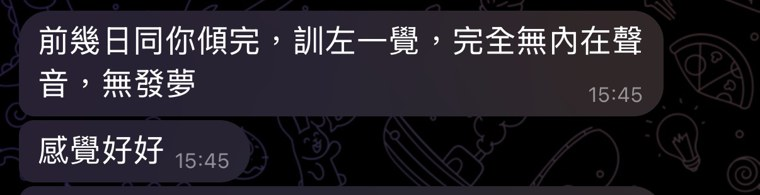
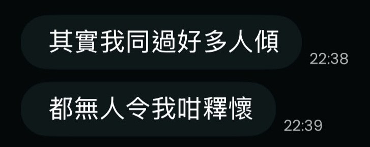
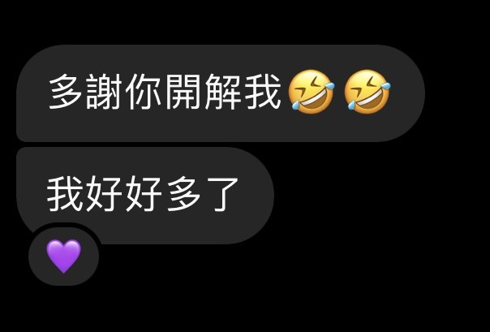
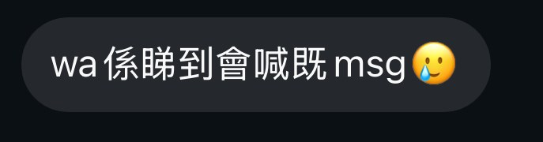
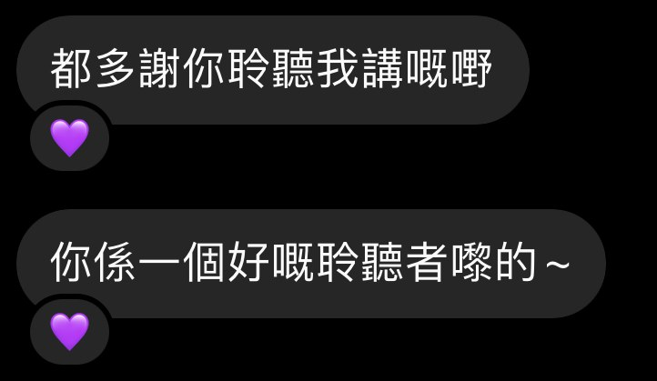
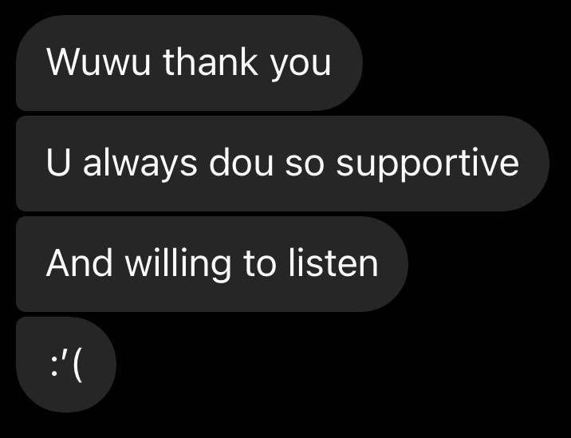
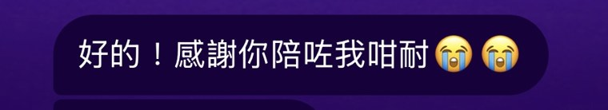
一起認識精神科
我會在社交平台分享精神科知識、精神科護理、前線心得，以及我所相信的價值觀。
Instagram @psynurse.project01 Threads @psynurse.project01工作以外的我
我喜歡走進大自然，也喜歡挑戰自己。這些生活中的熱愛，慢慢都成為了我陪伴別人的方式。
自由潛水・水肺潛水
無論是閉氣潛入深海，還是背著氣樽慢慢探索，都教會我在壓力之下保持平靜。陪伴焦慮的人時，第一步也是一起慢慢呼吸——自己先穩定，才能穩住別人。
衝浪・Wake Surf
自從在峇里第一次站上浪板，我就愛上了衝浪。浪是控制不了的，只能學會在上面站穩；跌落水再爬起來，就像康復路上的每一步。
跳舞
不用說話，也能用身體表達自己。它提醒我，要留意別人說不出口的感受。
影相
喜歡捕捉生活中細微的美好，這份對細節的觸覺，也讓我更留意病人細微的變化。
旅行・自駕遊
走到遠方讓自己抖一抖氣。照顧別人之前，要先照顧好自己。
學習與挑戰
我相信人一生都在學習，所以總愛嘗試未試過的事。
在海裡，我學會呼吸；在浪上，我學會平衡。這些，都成為了我陪伴別人的方式。
常見問題
撳一下問題，就可以看到答案。
甚麼是精神疾病？
精神疾病（Mental Illness）泛指一系列影響個人情緒、思想、認知、行為及日常生活功能的健康問題。
常見精神疾病包括：
- 抑鬱症（Depression）：持續情緒低落、失去興趣、疲倦或出現無望感。
- 焦慮症（Anxiety Disorders）：過度擔憂、緊張、不安，甚至伴隨身體不適。
- 思覺失調症（Schizophrenia）：可能出現幻覺、妄想及思考或認知方面的困難。
- 雙相情緒障礙（Bipolar Disorder）：情緒及精力出現明顯的躁狂或輕躁狂與抑鬱發作。
精神疾病並非單純的性格問題，亦不代表一個人意志薄弱。
精神健康與身體健康同樣重要。透過適當的評估、治療及支援，患者可以逐步改善生活質素，建立屬於自己的復元歷程。
精神科護士的工作是甚麼？
精神科護士（Psychiatric Nurse）是精神健康醫療團隊的重要成員，主要負責照顧有精神健康需要的人士，協助患者維持健康、接受治療及逐步復元。
工作範疇包括：
- 精神狀態評估：觀察及評估患者的情緒、思想、行為、認知及精神狀態變化。
- 藥物護理：按照醫囑提供藥物，觀察藥物效果及副作用。
- 治療性溝通：透過聆聽、陪伴及建立治療關係，了解患者的需要。
- 危機介入：識別自傷、傷人及其他危機風險，並按專業程序提供適當支援。
- 健康教育：向患者及家屬提供疾病、藥物及復元相關資訊。
- 復元支援：協助患者建立生活技能、改善社交功能及重新融入社區。
- 跨專業合作：與精神科醫生、心理學家、職業治療師、社工及其他醫療人員合作。
精神科護理並不只是照顧患者服藥或處理危機，更重要的是透過專業知識、治療性關係及持續支援，協助患者重拾生活自主權。
想入行做精神科護士，可以讀咩課程？
如果你有意喺香港投身精神科護理工作，可以考慮以下院校：
香港理工大學（PolyU）
精神健康護理學（榮譽）理學士學位
Bachelor of Science (Honours) in Mental Health Nursing →
香港都會大學（HKMU）
護理學榮譽學士（精神科）
Bachelor of Nursing with Honours in Mental Health Care →
精神科護理學高級文憑 →
你可唔可以幫我診斷？
唔可以。我唔會透過網站或網上私訊提供醫療診斷、處方或個別治療建議。
如果你有精神健康方面嘅困擾，建議尋求合資格醫護人員協助，接受適當評估及治療。
如遇到緊急情況，請即時聯絡當地緊急服務，唔好等待網上回覆。
點樣知道自己需要睇精神科？
如果你持續出現以下情況，並開始影響日常生活、工作、學業或人際關係，可以考慮尋求專業協助：
- 持續情緒低落、容易哭泣或失去興趣。
- 長期失眠、睡眠質素欠佳。
- 經常感到焦慮、緊張或不安。
- 情緒起伏明顯，難以控制。
- 專注力下降，日常生活受到影響。
- 出現異常感知或思考方面嘅困擾。
唔需要等到症狀嚴重先求助。即使未能確定自己是否患有精神疾病，亦可以先向專業人士查詢。
患有精神疾病係咪一定要入住精神科病房？
唔係。
並非所有患有精神疾病嘅人士都需要住院。是否需要入住精神科病房，主要取決於患者當時嘅精神狀態、病情嚴重程度、安全風險及治療需要。
一般而言，精神健康服務可以包括以下不同形式：
- 門診服務：定期覆診，由精神科醫生評估病情及調整治療。
- 社區精神健康服務：透過社區精神健康團隊提供跟進、支援及復元服務。
- 日間醫院服務：患者可以在日間接受治療及復康活動，完成後返回家中。
- 住院服務：當患者病情較嚴重、需要密切觀察、接受較密集治療，或出現較高安全風險時，醫療團隊可能建議住院。
住院並不代表患者失去自主能力，亦不代表病情永遠無法改善。
精神科住院嘅主要目的，是提供安全、密集及適切嘅治療，協助患者穩定病情，為日後重返社區及日常生活作準備。
精神疾病會好返嗎？
可以。好多精神疾病都可以透過適當治療、藥物、心理治療及社會支援得到改善。
不同疾病嘅病程及復元方式各有不同。有些人可以達到長期緩解，部分人可能經歷反覆發作，亦有人需要較長期嘅治療及支援。
復元（Recovery）唔一定代表所有症狀完全消失，亦可以係逐步恢復日常生活、工作、人際關係，以及重新建立生活目標。
患上精神疾病，並唔代表人生就此停滯。
精神病人係咪鬼上身？
唔係。從醫學角度，精神疾病並沒有科學證據證明係由鬼上身或靈體附身引起。部分患者可能出現幻聽、妄想或感知改變，令佢哋經歷到一般人未必能理解嘅感受。
精神疾病係健康問題，並唔係撞邪或意志薄弱。如果出現相關情況，應尋求精神科專業評估及協助。
我係咪需要一世食精神科藥物？
唔一定。
是否需要長期服藥，取決於疾病種類、病情、復發風險、治療反應及個人情況。
部分人士可能只需要一段時間嘅藥物治療；部分人士則可能需要較長期，甚至長期維持治療，以減低復發風險。
切勿因為感覺好轉就自行停藥或減藥。任何藥物調整，都應先與主診醫生商討。
服藥唔代表軟弱，接受治療亦唔代表失去自主能力。
精神科藥物會令人上癮嗎？
唔可以一概而論，因為不同類型嘅精神科藥物有唔同作用及風險。
如果你擔心藥物副作用、依賴問題或停藥反應，應向醫生或藥劑師查詢。
睇精神科係咪代表自己有精神病？
唔係。
精神科服務唔只係為已確診精神疾病嘅人士提供，亦可以協助有情緒困擾、焦慮、失眠、壓力或其他心理健康問題嘅人士。
尋求精神科協助，係照顧自己健康嘅其中一種方式，唔應該成為標籤或羞恥嘅來源。
精神疾病患者可以正常返工、拍拖、結婚及生育嗎？
可以。
精神疾病並唔代表一個人失去工作能力、建立親密關係或組織家庭嘅可能性。
每個人嘅病情、治療反應及生活需要都唔同。透過適當治療、支援及自我管理，不少患者都可以維持工作、建立關係及追求自己嘅人生目標。
如果涉及懷孕、生育計劃或藥物使用，應預先與主診醫生商討，評估治療及用藥安排。
照顧者可以點樣支援屋企人？
照顧精神健康受困擾嘅家人，唔單止係陪伴，亦包括理解、聆聽及尊重對方嘅感受。
你可以嘗試：
- 耐心聆聽，避免急於批評或說教。
- 鼓勵家人接受適當嘅專業協助。
- 了解疾病及治療相關資訊。
- 協助建立穩定嘅生活作息。
- 留意病情變化及可能出現嘅危機訊號。
同時，照顧者亦需要照顧自己。適時尋求支援、休息及分擔照顧責任，同樣重要。
我可以點樣同你合作？
歡迎透過網站嘅「聯絡我」頁面，以電郵提出合作查詢。
無論係精神健康推廣、教育活動、內容創作、資訊分享或其他合作形式，都歡迎交流。
你會回覆私訊嗎？
我會盡量閱讀及回覆收到嘅訊息，但未必能夠即時回覆，亦未必能夠逐一解答所有個人醫療問題。
如涉及緊急情況，請勿等待網上回覆，應即時尋求專業或緊急支援。
聯絡我
想合作、交流？歡迎在 Instagram 或 Threads 私訊我。
電郵：psynurse.project01@gmail.com
🌻 太陽花種子箱對網頁或內容有任何意見？撒一粒種子給我吧！ →我未必能即時回覆訊息。如有緊急需要，請致電下方熱線。